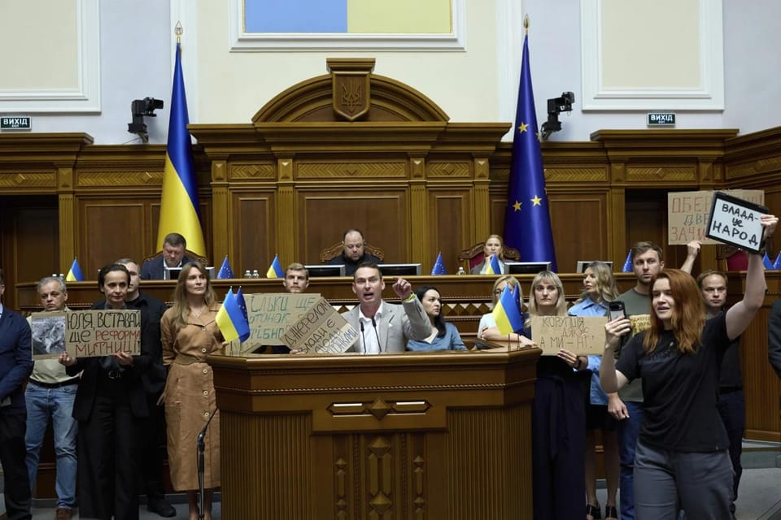

世界苦茶08月01日新闻 | 34条 | 美国公布对等关税清单

美国公布对等关税清单 | 缅甸解除紧急状态宣布大选 | 印度在美国施压后暂停购买俄石油 | 加沙停火协议恐破裂 | 特朗普盟友修宪无限连任
每日三條新聞解析
苦茶数据
美元兑人民币：7.21（昨日7.19，前日7.17）
美元兑日元：150.64（昨日148.78，前日148.13）
上证指数：3566（昨日3578，前日3628）
标普500指数：6339（昨日6362，前日6370）
比特币：115499（昨日118304，前日118022）
布伦特原油：72.63（昨日73.24，前日72.65）
中国新闻
• 中国防长强硬表态台湾 ：中国防长董军在庆祝解放军建军周年的招待会致辞中首次直接点名“台湾”，涉台表述更为强硬，称决不允许任何台独分裂图谋得逞，随时挫败任何外部武力干涉，“为了祖国的完全统一，解放军时刻准备着！”据新华社报道，中国国防部星期四在北京人民大会堂举办招待会，庆祝解放军建军98周年。中共中央军委委员、军委联合参谋部参谋长刘振立，中央军委委员、军委纪律检查委员会书记张升民出席招待会。中国国防部长董军出席并致辞。董军说，今年是“中国人民抗日战争暨世界反法西斯战争”胜利80周年，是台湾光复80周年，也是联合国成立80周年。解放军在中共的旗帜下，“为挽救民族危亡、实现民族解放建立不朽功勋，为世界反法西斯战争胜利作出巨大贡献”。
• 朱孝天表态陆委会回应 ：台湾男团F4成员之一的朱孝天在直播中提到希望两岸尽快统一，台湾政府的大陆委员会对此回应时称，这是他的个人立场，陆委会予以尊重。综合台媒报道，台湾陆委会今年5月宣布，将调查赴陆发展的台湾艺人与中共之间的合作关系，并将那些曾被批是中国大陆对台统战样板的艺人，如欧阳娜娜等，列为重点行政查察对象。据台湾《联合报》报道，台陆委会副主委兼发言人梁文杰星期四在例行记者会上应询时说，朱孝天的表态与之前在查的案子情况不太一样。那些被查人员是附和中国大陆党政军组织的指挥或操纵，发表赞成“武统台湾”言行。 （翻评：大罢免大失败的后续效应。）
• 江西推进干部能上能下 ：中国江西省召开领导干部能上能下工作推进会，称要切实增强推进领导干部能上能下的责任感紧迫感，以更大力度、更实举措推动领导干部能上能下工作取得新进展和成效。据《江西日报》报道，江西省领导干部能上能下工作推进会星期一在省会南昌召开。中共江西省委常委、省委组织部部长庄兆林出席并讲话。庄兆林指出，中共江西省委近年认真贯彻中共中央《推进领导干部能上能下规定》，以上率下、传导压力，进一步提振了干部干事创业的精气神。
• 中国推高功率充电设施 ：中国国家能源局正会同有关部门制订政策，推动大功率充电设施建设改造，以更好解决人民使用新能源汽车在节假日出行的问题。据财联社报道，中国能源局星期四举行新闻发布会，发布上半年全国能源形势、上半年可再生能源并网运行情况，介绍迎峰度夏电力供需总体情况，并发布《中国新型储能发展报告（2025）》。中国能源局综合司副司长张星说，为了更好地解决人民关注的节假日出行等问题，能源局正会同有关部门，制订大功率充电设施建设改造的政策文件。
• 中使馆促日保障中国人安全 ：两名中国人在日本东京街头遇袭重伤后，中国驻日使馆称，针对日本社会近期出现一些排外情绪，已向日本外务省提出严正交涉，要求日方切实保护在日中国公民安全与合法权益。据中国驻日本大使馆网站消息，驻日本大使馆星期四（7月31日）发文提醒在日本的中国民众注意加强安全防范。使馆称，袭击事件发生后，使馆第一时间联系慰问受伤同胞并赴事发地辖区警署，要求日方马上采取行动，抓捕嫌犯，严惩凶手。
• 外交部回应东京袭击事件 ：两名中国人在日本东京街头遇袭重伤，中国外交部称驻日使馆正进一步核实情况，并敦促日方采取有效措施保障中国公民安全。中国外交部发言人郭嘉昆在星期四的例行记者会上回答有关询问时说，外交部注意到有关报道，中国驻日本使馆第一时间向日方表明关切，正在进一步核实情况。中国外交部敦促日方采取有效措施保障中国公民安全。
• 环球时报批南京电影网暴 ：中国官媒《环球时报》称，南京大屠杀题材电影《南京照相馆》遭到网络暴力，并批评此类网暴歪曲历史，将铭记历史污名化为仇恨教育，是历史虚无主义的最新变种，怀疑“是否有境外对华认知战因素”。《环球时报》星期四发表题为“坚决反对一些人网暴《南京照相馆》”的社评文章，获得中国人民大学吴玉章讲席教授金灿荣、复旦大学网络空间国际治理研究基地主任沈逸等“网红”学者转发。文章称，电影《南京照相馆》在中国暑期档中脱颖而出，上映仅六天票房就突破7亿元人民币，预测总票房更是超过30亿元，是继春节档《哪吒2》之后的又一部现象级影片。但在个别平台上，包括电影导演在内的主创团队遭遇具有明显指向性的恶意攻击，甚至形成针对个人的网络暴力。
• 北京暴雨已致44人遇难 ：中国首都北京市本轮极端强降雨引发灾情，已造成全市44人死亡，失踪失联九人。其中，密云一养老中心31人遇难。综合央视新闻、北京青年报、北京日报报道，北京市政府在星期四下午召开防汛救灾新闻发布会，发布会现场全体为遇难者默哀。北京市委常委、常务副市长夏林茂在会上说，7月23日至29日，北京遭遇强降雨天气，截至星期四中午12时，全市因灾死亡44人，失踪失联九人。
• 释永信涉港公司被查 ：香港媒体报道，中国河南嵩山少林寺前住持释永信，在香港先后出任五家公司的董事。据《明报》星期四报道，释永信在香港先后出任五家公司的董事，其中两家刚在上月被香港公司注册处刊宪启动剔除程序，另一家早已解散，剩下两家仍为注册公司，分别为香港少林寺有限公司和少林书局香港有限公司。其中，香港少林寺截至去年3月底的资产净额有239万元港元，所在自置物业市值估计逾千万元。
• 澳门前议员区锦新被捕 ：澳门民主派前立法会直选议员区锦新据报被拘捕，警方称有强烈迹象显示他长期勾结境外反华组织及敌对势力，严重危害国家安全。综合网媒“香港01”、《明报》、《星岛日报》等报道，澳门司法警察局星期四公布，星期三拘捕一名68岁区姓男子，称有强烈迹象显示他长期勾结境外反华组织及敌对势力，引发他人仇恨中央人民政府、破坏澳门特区选举，严重危害国家安全，违反《维护国家安全法》第13条。报道称，这名被拘捕的区姓男子是区锦新。澳门媒体“论尽媒体”在官方脸书发文称，区锦新星期四早上被移送检察院，他的妻子也有到场，被列为证人。 （翻评：澳门证明了，再低调再听话都没用，京官晋升就靠迎合国安议题，没有国安问题，创造国安问题也要查。）
亚太印太新闻
• 王世坚反罢免遭批 ：台湾执政的民进党立法委员王世坚反对继续推进大罢免，遭党内要角批评“不服从命令的滚”，他回应称不会退党，理念还是跟民进党一致。综合ETToday新闻云、中评社和东森新闻报道，针对8月23日第二波大罢免投票，身兼民进党主席的台湾总统赖清德星期三在中常会上说，民进党会全力支援罢免团体，一起走完最后一里路。王世坚则持反对意见，还喊话赖清德呼吁罢团撤案，遭同党立委王义川和林楚茵批评“不服从命令的滚啦！”“吃里扒外，慢走不送！”
• 尹锡悦被批捕再升级 ：韩国法院批准了负责调查前总统尹锡悦夫人金建希相关案件的“金建希特检组”针对尹锡悦提出的逮捕令申请。“金建希特检组”于星期三向首尔中央地方法院申请了对尹锡悦的逮捕令。尹锡悦目前处在受羁押状态，此前逮捕令由负责调查紧急戒严事件的特检组申请并获批。尹锡悦于本月10日被捕，羁押在首尔拘留所。尹锡悦被捕后，一直以健康状况恶化为由拒绝出席一切调查和庭审。尹锡悦先后在29日和30日两次拒绝出席金建希特检组的传唤调查后，特检组为消除法律争议，于30日向首尔中央地方法院申请了对尹锡悦的逮捕令。
• 柬埔寨要求泰国归还士兵 ：柬埔寨呼吁泰国释放在停火协议生效后被俘的柬军士兵。柬埔寨国防部发言人马莉淑洁达星期四在新闻发布会上说，星期二上午7时30分，泰国士兵控制了21名柬军士兵。新华社引述她说，到目前为止，柬方已收到一名阵亡士兵的遗体。“我们呼吁泰方尽快将所有20名军人遣返回柬埔寨，以及其他可能受泰国控制的军人。”
• 缅甸军政府解除紧急状态 ：缅甸军政府星期四结束国家紧急状态，为年底大选做准备。法新社报道，缅甸军政府发言人佐敏吞在星期四发给记者的语音信息中说：“今天解除紧急状态，是为了让国家能够举行选举，走上多党民主的道路。”他补充说：“选举将在六个月内举行。” （翻评：不可批评的选举已经知道结局了。）
• 赖清德民调满意度下跌 ：台湾《美丽岛电子报》的最新民意调查结果显示，逾五成六民众不满意总统赖清德的施政表现，为他就任以来的新高。《美丽岛电子报》星期四在官网发布的最新民调显示，56.6%受访民众不满意赖清德执政以来的施政表现，较6月增加了9.8个百分点，为他去年5月就任总统以来的新高，其中38%表示很不满意，18.6%表示有点不满意。民调显示，34.6%受访民众满意赖清德施政表现，较6月大跌10.1个百分点，为去年6月以来的新低，其中11.4%表示很满意，23.2%表示还算满意。
科技新闻
• AI巨头财报释放利好信号 ：科技巨头Meta、微软和三星陆续公布业绩报告，纷纷释放出同一信号：在AI赛道上的投资正初见成效，成为拉动营收增长与资本市场信心的关键。Meta Platforms和微软于本周公布业绩后，双双在盘后交易中大涨，带动人工智能概念股整体上涨5亿美元。Meta将全年支出预期下限上调20亿美元，反映出在“超级智能”发展上的高强度投入。公司预计第三季营收将达475亿至505亿美元，远高于市场预期。微软则预测第三季资本支出将达到创纪录的300亿美元，是单季历史新高。Azure云平台成为营收亮点，云计算业务收入同比增长34%，最终超过750亿美元。
• 民主党议员提TikTok新法案 ：民主党参议员埃德·马基周四提出了新的国家安全保障措施，这些措施将确保TikTok能够保持在线。国会在去年通过了立法，强制字节跳动在1月19日之前剥离 TikTok，否则将面临禁令，但特朗普总统已指示司法部不要执行该法律。马基的提案将取消要求字节跳动剥离TikTok美国业务的要求，如果该公司建立关于内容的透明度要求，并限制外国访问TikTok美国用户的数据。马基表示：“数月来，我一直在敦促我的同事们寻找一条替代TikTok禁令的路径，能让TikTok保持在线而不危及国家安全。随着特朗普继续非法延长剥离期限，国会是时候重申其立法权、纠正其错误并考虑对TikTok采取新的方法了。”
• Meta加码AI基础设施投资 ：Meta公司正在向扩大其人工智能目标所需的物理和技术基础设施投入大量资金。该公司在本周三的第二季度财报中表示，计划将在构建人工智能基础设施上的支出增加一倍以上，如数据中心和服务器。Meta 表示：“我们目前预计，2025 年的资本支出将在 660 亿至 720 亿美元之间 …… 按中间值计算，同比增加约 300 亿美元。”Meta 表示，公司计划将这种大规模支出延续到2026年，预计明年在AI基础设施上的投入仍将有类似的大幅增长。Meta称，此举是为了“积极抓住机遇，增加算力，以满足人工智能研发和业务运营的需求”。
• 加拿大取消星链合约 ：加拿大安大略省已取消了与马斯克的公司星链签订的价值 1 亿加元的卫星高速互联网合同，履行了该省省长切断关系以示对美国向加拿大征收关税进行报复的誓言。安大略省能源和矿业部长斯蒂芬·莱切在周三多伦多一场不相关的新闻发布会上确认取消了该互联网服务合同。负责加拿大这个人口最多省份宽带连接事务的莱切没有说明终止合同将花费多少。莱切说：“我可以确认省长履行了他的诺言，那就是取消该合同，原因正如他过去所指出的那样。”根据去年11月签署的协议条款，星链本应向偏远社区中15,000户符合条件的家庭和企业提供高速互联网接入。
财经新闻
• 特朗普签署对等关税令 ：路透社报道，美国总统特朗普星期四签署行政命令，对数十个国家征收介于10%至41%的对等关税，主要国家如下：
- 英国：10%
- 巴西：10%（此后加征40%惩罚关税）
- 土耳其：15%
- 韩国：15%
- 新西兰：15%
- 日本：15%
- 以色列：15%
- 欧盟：15%
- 泰国：19%
- 菲律宾：19%
- 柬埔寨：19%
- 越南：20%
- 台湾：20%
- 墨西哥：25%（宽限90天）
- 印度：25%
- 南非30%
- 加拿大：35%（！？）
- 瑞士：39%
- 缅甸：40%
- 老挝：40%
- 叙利亚：41%
• 美延墨关税宽限期 ：美国总统特朗普在更高关税生效前夕宣布延长墨西哥的关税宽限期90天，以便与墨西哥谈判一项更广泛的贸易协议。但世界其他大部分地区的关税谈判依然悬而未决，各国还在观望特朗普是否会兑现星期五零时生效的“对等关税”威胁，以及如果关税生效，美国将对进口产品征收多少关税。综合路透社和《纽约时报》报道，特朗普星期四早上与墨西哥总统辛鲍姆通电话后，宣布给予墨西哥多90天关税宽限期，让双方有更多时间进行贸易谈判。
• 特朗普宣布加征25%关税后，印度国有炼油厂暂停采购俄罗斯石油： 业内消息人士称，由于本月折扣缩减，且美国总统唐纳德·特朗普警告各国不要从莫斯科购买石油，印度国有炼油厂已于过去一周停止采购俄罗斯石油。作为全球第三大石油进口国，印度是俄罗斯海运原油的最大买家。在俄罗斯与乌克兰的战争已持续四年之际，原油是俄罗斯重要的收入来源。四位熟悉这些炼油厂采购计划的消息人士告诉路透社，印度国有炼油厂——印度石油公司、印度斯坦石油公司、巴拉特石油公司和芒格洛尔炼油石化有限公司——在过去一周左右没有采购俄罗斯原油。印度石油公司、印度石油公司、印度石油公司、印度石油公司、印度石油公司和芒格洛尔炼油石化有限公司尚未立即回应路透社的置评请求。
• 制造业PMI连续四月萎缩 ：中国国家统计局星期四公布7月制造业采购经理指数微跌至49.3，连续第四个月落入萎缩区间。7月制造业PMI从6月的49.7跌至49.3，不仅继续跌破50枯荣线，且低于路透社调查预测的49.7。这也是制造业PMI自4月以来的最低水平。根据中国国家统计局，7月非制造业商务活动指数为50.1，比上月下降0.4个点。
• 中国外卖平台集体官宣规范促销补贴： 8月1日，美团、淘宝、饿了么等先后在官方网站等发布了声明，承诺将 “规范促销”，同时提出多项限制补贴行为的举措，包括规范促销行为、合理规划发放补贴、不做非理性促销活动、不以显著低于成本的价格销售商品和服务等。淘宝在 App 规则中心上线了这则声明。声明中承诺，将持续提升服务，推动良性竞争。而美团则在企业官网、官微推送了该声明，标题为“繁荣行业生态，抵制无序竞争”。本次多家平台同时发声，或源自于上一轮约谈的政策延续。此前在上个月，中国市场监管总局官网发布消息称已约谈外卖平台，要求进一步规范促销行为。
• 美与泰柬达成贸易协议 ：美国商务部长卢特尼克周三说，美国在8月1日关税谈判最后期限前，与泰国和柬埔寨达成了贸易协议。卢特尼克是在星期三接受福克斯新闻采访时发表上述言论，但没有提供更多细节。泰国最近与柬埔寨发生边境冲突，美国总统特朗普此前强调，在泰柬停火前，美国不会与两国签署任何贸易协议。
• 美科技行业裁员激增 ：美国一家人力资源公司的数据显示，美国企业7月宣布的裁员人数激增，显著高于疫情以来同期平均水平，其中以科技行业最为显著。人力资源公司Challenger, Gray & Christmas星期四发布的报告显示，美国企业7月宣布裁员6万2075人，而去年同期为接近2万5900人。这是过去十年来7月宣布裁员人数的第二高规模，仅次于2020年冠病疫情最严重时期。彭博社引述报告说，企业计划裁员的主要原因包括人工智能（AI）和关税问题，对经济前景的不确定性导致零售业裁员和门店关闭。
• 美国将采用特殊策略以快速提高稀土产量，旨在遏制中国 ：五位知情人士向路透透露，白宫高级官员上周告诉一批稀土企业，他们正在采取类似疫情时期的策略，以提升美国关键矿产的产量，并通过为其产品设定最低价格来遏制中国在市场上的主导地位。这场此前未被报道的会议于7月24日举行，由总统特朗普的贸易顾问纳瓦罗和国家安全委员会负责供应链战略的官员David Copley主持。与会者包括十家稀土公司以及科技巨头苹果、微软和康宁，这些企业都依赖稳定的关键矿产供应来制造电子产品。
• 俄机构禁止四个中国卡车品牌在当地销售： 俄罗斯联邦技术监督与计量局称，根据检查结果，该部门决定禁止中国东风、福田、一汽和汕德卡品牌的一系列型号卡车和底盘对俄出口和在俄销售。据消息，在对上述品牌的官方代表处进行了现场突击检查后采用了保障条款，根据该条款，允许车辆进口至俄罗斯市场和批准底盘型号的车辆型式认可证书暂停生效。发布此禁令的原因是上述车型违反了保障司机和其他行驶人员安全及健康的必需要求。比如，刹车系统能效、行驶汽车声级、车管所检验和紧急呼救设备安装不符合要求。俄技术监督与计量局向上述品牌的官方代表处下达了一系列整改要求。
俄乌战争
• 俄袭基辅致13死135伤 ：俄罗斯7月31日袭击乌克兰首都基辅，造成至少13人死亡、135人受伤。一栋9层住宅楼受袭后大部分倒塌。救援人员正在搜寻被困人员。顿涅茨克地区克拉马托尔斯克一住宅楼也遭到袭击，造成1人死亡、11人受伤。乌克兰空军称，俄罗斯夜间发射了309架无人机和8枚巡航导弹。防空系统拦截了288架无人机和3枚导弹，剩余无人机和导弹击中目标。俄罗斯国防部声称俄军完全控制顿涅茨克地区的战略城镇恰索夫亚尔。乌克兰军方否认该说法，称情况没有发生变化。
• 乌恢复反腐机构独立性 ：乌克兰7月31日恢复了国家反腐败局和特别反腐败检察院的独立性。最高拉达当天以331票赞成、9票弃权的结果批准了新法案。新法案确定了特别反腐败检察院的负责人和检察官在程序上独立于乌克兰总检察长。国家反腐败局调查人员只能执行特别反腐败检察院检察官的指示。法案恢复了特别反腐败检察院检察官将刑事诉讼移交给国家反腐败局调查人员的权力，并取消了总检察长的这一权力。两个机构协商后可调查其他机构管辖的刑事犯罪，无需总检察长批准。最高拉达通过后，总统泽连斯基迅速签署了新法案，称该法案“保证没有任何形式的外部影响或干扰”，“乌克兰毫无疑问是一个民主国家”。自7月22日限制两个反腐机构独立性的法案通过后，基辅等多地每天都会举行抗议活动。法案通过后，最高拉达附近的抗议者爆发出欢呼和掌声。欧盟官员亦对新法案通过表示欢迎。此外，两个反腐机构还否认了“匿名亲俄的Telegram频道”传播的两个机构怀疑乌克兰总统和总理办公室官员的“虚假信息”。
国际新闻
• 加沙停火谈判或破裂 ：以色列总理内坦亚胡星期四会晤到访的美国中东问题特使威特科夫。以色列媒体随后报道称，以方认为加沙地带停火谈判濒临破裂，正考虑扩大军事行动，实现加沙地带“非军事化”。以媒说，内坦亚胡与威特科夫谈了将近三个小时。一名以方高级官员告诉《今日以色列报》、“新消息”网站等媒体，鉴于哈马斯的立场和停火谈判濒于失败，以美双方同意，不再寻求就短期停火、部分人质获释达成协议，而是改为寻求一项全面方案，即解除哈马斯武装、实现加沙地带“非军事化”，并使所有人质获释。这名以方官员还称，哈马斯方面已“切断联络”。《耶路撒冷邮报》当天引述一名以方消息人士的话报道，以政府内部认为，哈马斯不大可能软化立场，加沙停火谈判濒临破裂，以方扩大在加沙地带的军事行动眼下看起来“不可避免”。
• 哈里斯否认参选加州州长 ：此前有报道称，2024年美国总统竞选落败的哈里斯可能会竞逐加州州长之位。但这名前民主党副总统周三明确表示她不会这么做。哈里斯星期三发表声明说：“我热爱这个州，热爱这里的人民，热爱这里的希望。这里是我的家乡。但经过深思熟虑，我决定不参加这次州长竞选。”哈里斯强调，当前她的领导能力和公共服务精神不会通过担任民选公职来体现，但她计划继续投身民主党事务，并在未来几个月分享更多自己的规划。
• 立陶宛总理宣布辞职 ：立陶宛总理金陶塔斯·帕卢茨卡斯7月31日宣布辞职。帕卢茨卡斯最近受到媒体和执法机构对其商业和金融交易的调查，引发广泛质疑和抗议活动。帕卢茨卡斯在辞职声明中称，不能让执政联盟和内阁成为丑闻的人质，因此决定辞职。帕卢茨卡斯还将辞去该党主席一职。随着总理辞职，执政联盟协议将失效，必须重新谈判。预计其整个内阁也将辞职。
• 萨尔瓦多批准无限期总统连任，并将总统任期延长至六年： 萨尔瓦多总统纳伊布·布克尔所属政党周四在该国立法议会批准了宪法修正案，允许无限期总统连任，并将总统任期延长至六年。新思想党议员安娜·菲格罗亚提议修改宪法的五项条款。该提案还包括取消第一轮选举中得票最多的两位候选人之间的第二轮对决。新思想党及其在立法议会的盟友迅速以压倒性多数批准了这些提案。投票以57票赞成、3票反对获得通过。尽管宪法禁止布克尔连任，但布克尔去年仍以压倒性优势赢得连任，此前，由其政党选出的最高法院法官于2021年裁定，允许布克尔连任第二个五年任期。 （翻评：这就是那个配合美国搞移民集中营的国家，同样威权化了。）